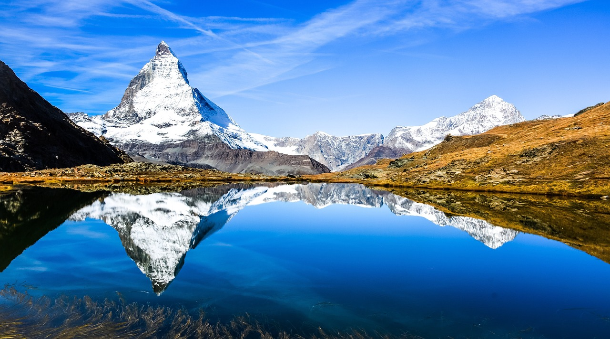
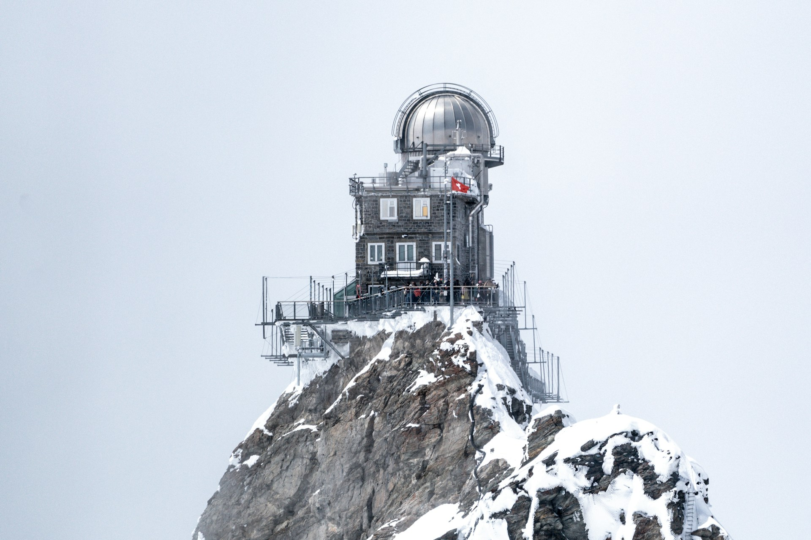
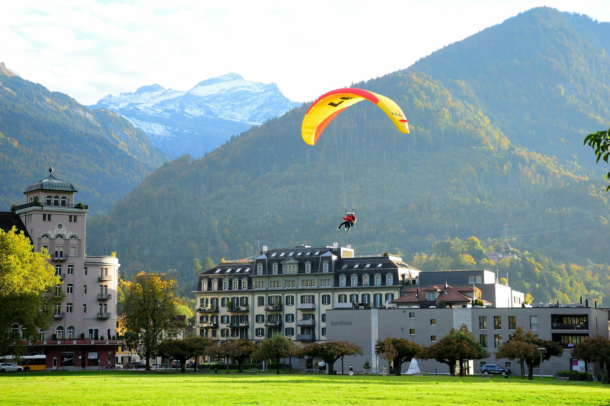

Destinos Imperdibles
Explora los lugares más emblemáticos de Suiza
-
 Alpes
AlpesLos Alpes Suizos
Montañas majestuosas y paisajes de ensueño
-
 Alpes
AlpesZermatt
Pueblo alpino famoso por el Matterhorn y el esquí.
-

AlpesMatterhorn
Una de las montañas más icónicas del mundo.
-

AlpesRegión Jungfrau
Glaciares, trenes de montaña y vistas espectaculares.
-

AlpesInterlaken
Capital suiza de los deportes de aventura.
-
 Ciudades
CiudadesCiudades Históricas
Zúrich, Lucerna, Berna y Ginebra
-
 Ciudades
CiudadesLucerna
Ciudad pintoresca a orillas del lago con arquitectura medieval.
-
 Ciudades
CiudadesZúrich
La ciudad más grande de Suiza y su centro financiero.
-
 Ciudades
CiudadesBerna
Capital de Suiza con centro histórico medieval.
-
 Ciudades
CiudadesSchaffhausen
Ciudad histórica cerca de las Cataratas del Rin.
-
 Lagos
LagosLagos Cristalinos
Aguas turquesas rodeadas de naturaleza
-
 Lagos
LagosLago de Ginebra
Uno de los lagos más grandes de Europa occidental.
-
 Lagos
LagosLago de Lucerna
Lago rodeado por montañas y pueblos encantadores.
-
 Lagos
LagosLago Brienz
Lago alpino famoso por su color turquesa intenso.
-
 Lagos
LagosLago Thun
Lago alpino rodeado de castillos medievales.
-
 Trenes
TrenesTrenes Panorámicos
Viajes inolvidables por los Alpes
-
 Trenes
TrenesGlacier Express
Uno de los trenes panorámicos más famosos del mundo.
-
 Trenes
TrenesBernina Express
Ruta espectacular entre Suiza e Italia.
-
 Trenes
TrenesGoldenPass Line
Ruta panorámica entre Lucerna y Montreux.
-
 Trenes
TrenesGotthard Panorama Express
Combina viaje en tren y barco panorámico.
¿Listo para tu Aventura Suiza?
Planifica tu viaje perfecto a través de los Alpes
Ver Experiencias